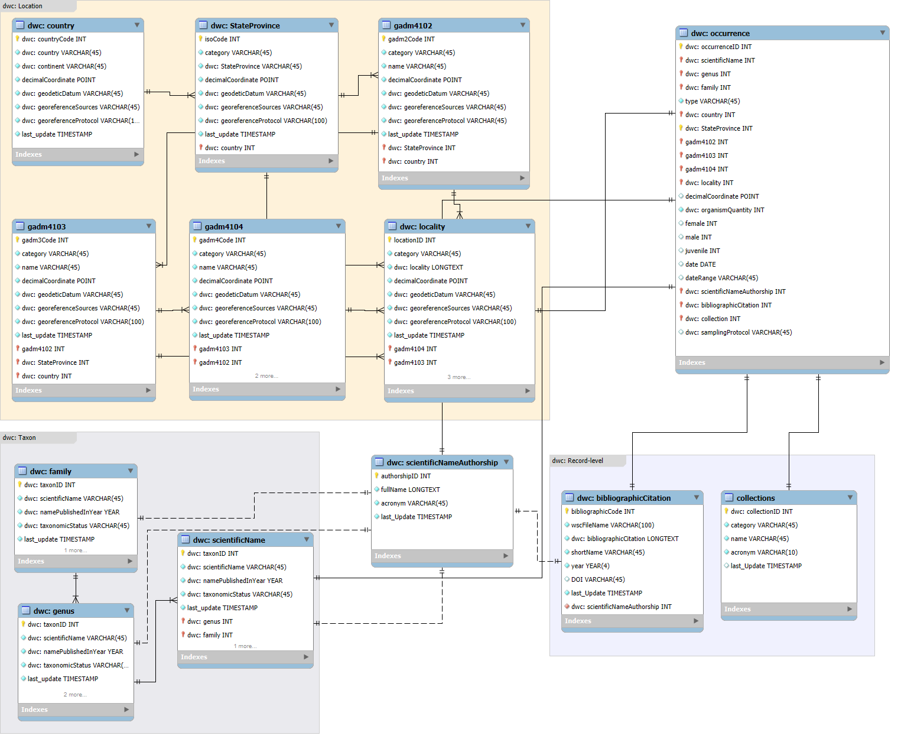
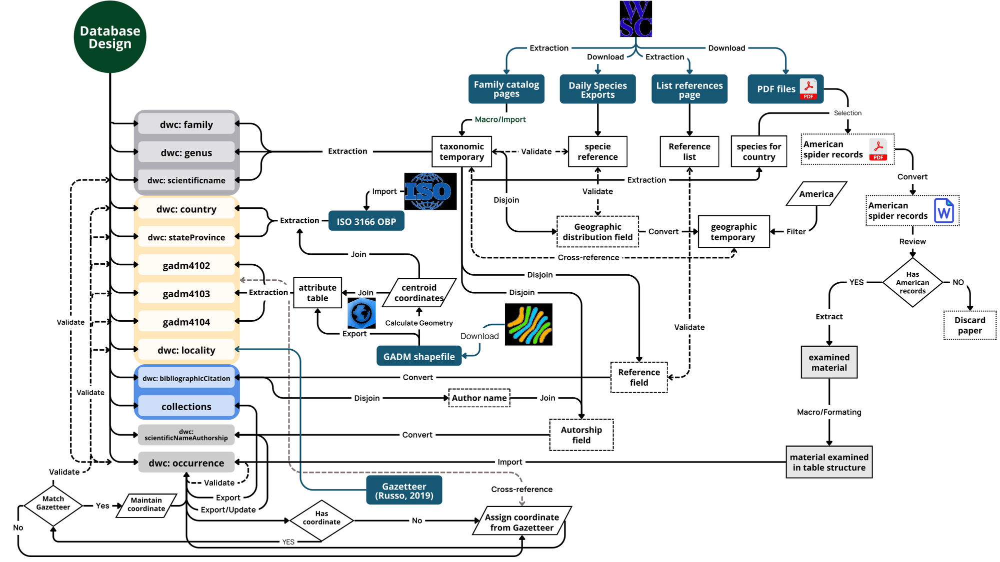
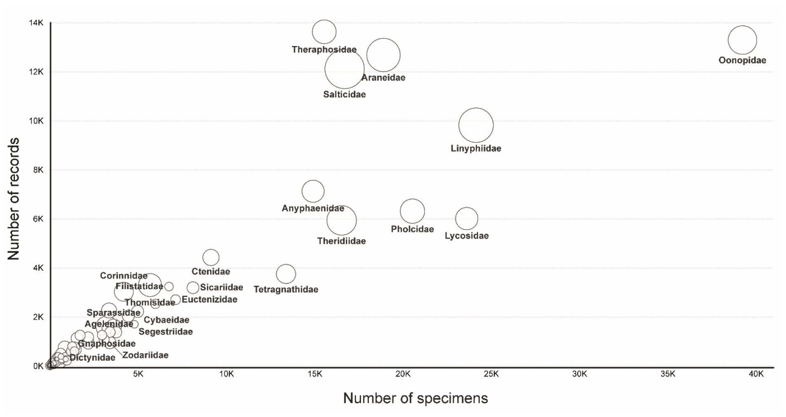
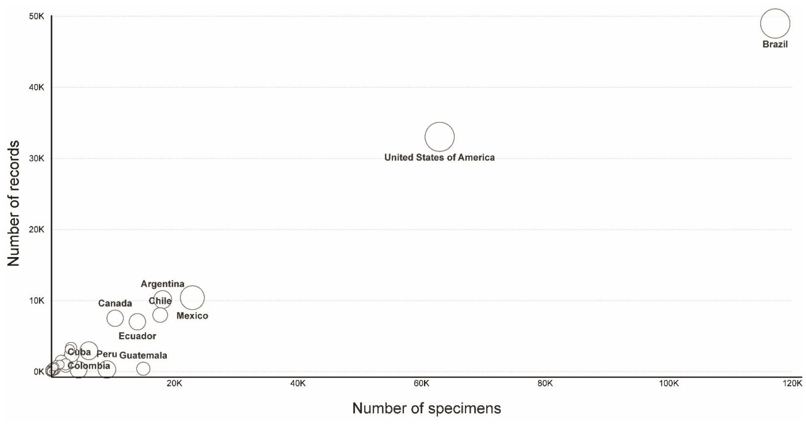
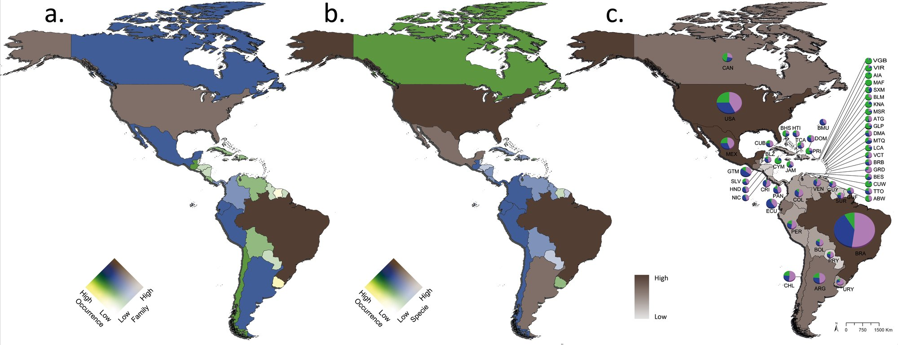
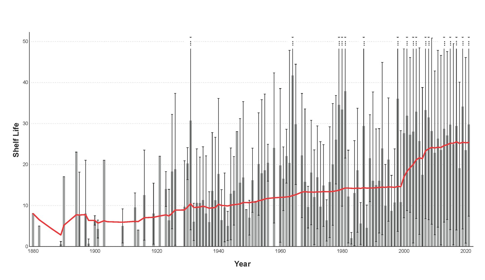
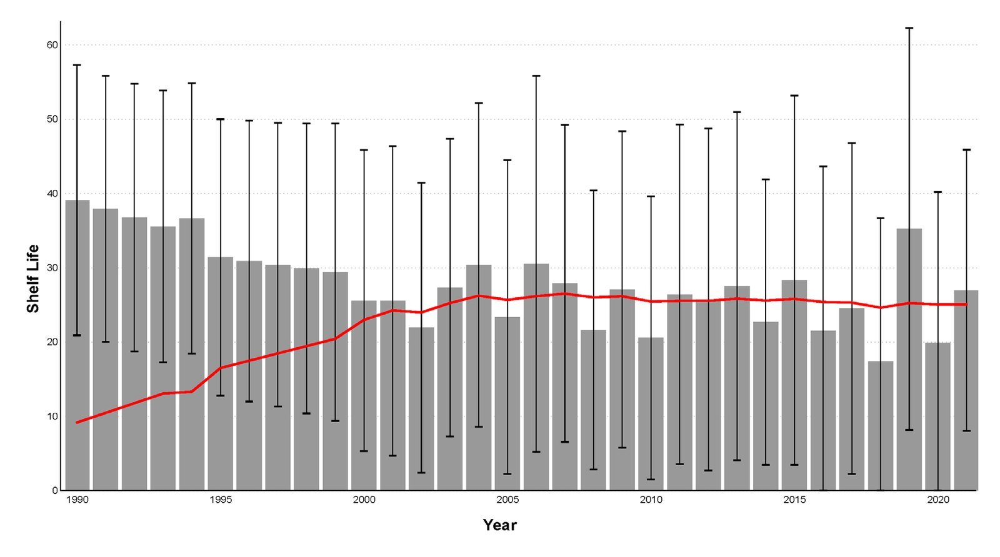

SPIDBASE: um banco relacional de 148 mil registros de aranhas extraídos da literatura
Modelo entidade-relacionamento alinhado ao Darwin Core, com o histórico taxonômico de cada registro, gazetteer próprio e regras de integridade.
- Entrega
- Banco de dados e capítulos da tese (2024)
- Meu papel
- Modelagem, extração, integração e validação
- Padrões
- Darwin Core · ISO 3166 · GADM
- Ferramentas
- MySQL Workbench · Excel e macros · ArcGIS Pro · Power BI







Modelo entidade-relacionamento: 13 entidades agrupadas nas classes do Darwin Core de taxonomia, localização e fonte, além de autoria e ocorrência.
Do World Spider Catalog, ISO 3166 e GADM até a tabela de ocorrências: extração, tabulação dos artigos e validação contra a taxonomia e o gazetteer.
Registros e espécimes por família. O tamanho do círculo indica o número de espécies.
Registros e espécimes por país. O tamanho do círculo indica o número de espécies. Brasil e Estados Unidos concentram a maior parte dos registros.
a. número de famílias; b. número de espécies; c. ocorrências por país, com a proporção de fêmeas, machos e jovens.
Tempo entre a coleta do registro mais antigo e a descrição da espécie. Barras: média por ano de descrição; linha vermelha: valor acumulado; linhas pretas: erro padrão.
Tempo entre a coleta e a publicação de cada registro, de 1990 a 2021. Barras: média por ano de publicação; linha vermelha: valor acumulado; linhas pretas: erro padrão.
O problema
Bases abertas como o GBIF misturam fontes, padrões e níveis de qualidade. O World Spider Catalog tem taxonomia confiável, mas geografia imprecisa, restrita à distribuição geral das espécies. Faltava uma base de aranhas das Américas com registros rastreáveis até a publicação de origem.
Os dados
World Spider Catalog, versão 24.0: exportação diária de espécies, páginas de família, lista de referências e PDFs dos artigos. Divisões administrativas do ISO 3166 e do GADM, e gazetteers como USGS, IBGE e GeoHack.
O método
- Modelo entidade-relacionamento no MySQL Workbench, com 13 entidades e termos do Darwin Core.
- Normalização até a forma normal de Boyce-Codd, chaves primárias e estrangeiras e restrições de tipo, unicidade e nulidade.
- Taxonomia, gazetteer e fontes usadas como ontologias, para controlar a entrada das ocorrências.
- Extração dos registros dos artigos com macros próprias para limpar e estruturar o texto; nomes validados contra a taxonomia e localidades contra o gazetteer.
- Cálculo da vida útil (shelf life) das espécies e dos registros.
O resultado
16.679 espécies válidas nas Américas, cerca de 34% da diversidade mundial de aranhas, em 95 famílias e 48.593 localidades georreferenciadas.
- Cada registro guarda o histórico taxonômico: sinonímias e mudanças de nome ao longo do tempo.
- Entre a primeira coleta e a descrição de uma espécie passam em média 25 anos (mediana de 18), acima das estimativas anteriores para aranhas, de 15 a 17 anos. O atraso cresceu a partir dos anos 2000.
- A base sustenta as análises de diversidade das pranchas 1 a 5.